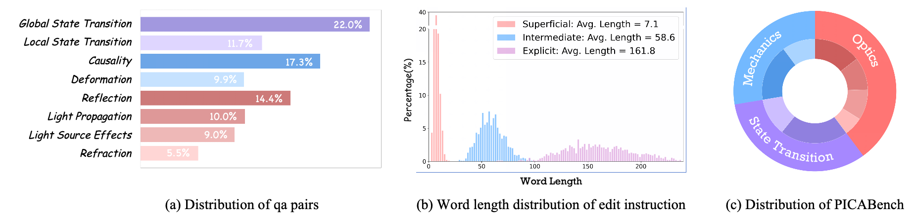

How Far Are We from Physically Realistic Image Editing?
PICABench: A comprehensive and fine-grained benchmark for physically realistic image editing.
PICAEval: A region-aware, VQA-based evaluation protocol that incorporates
human-annotated key regions to provide interpretable and reliable assessments for physical
realism.
PICA-100K: A large-scale dataset derived from synthetic videos, effectively enhances
model's physical consistency while preserving semantic fidelity.
How far are we from physically realistic image editing?
The realism of image editing depends not only on semantic accuracy but also on the correct rendering of physical effects.
Existing models and benchmarks overlook this limitation by solely emphasizing semantic fidelity and visual consistency.
Consequently, we still lack a clear understanding of how far we are from physically realistic image editing.
Figure 1: Challenging cases from PICABench. Despite providing instruction-aligned outputs,
current SoTA models still struggle with generating physically realistic edits, resulting in unharmonized
lighting, deformation, or state transitions with common editing operations.
PICABench: A Benchmark for Physically Realistic Image Editing
To address this gap, we introduce PICABench—a diagnostic benchmark designed to evaluate physical realism in image editing beyond semantic fidelity. We categorize physical consistency into three intuitive dimensions that are often overlooked in typical editing tasks: Optics, Mechanics, and State Transition. Optics includes light propagation, reflection, refraction, and light-source effects; Mechanics captures deformation and causality; and State Transition addresses both global and local state changes. This fine-grained taxonomy facilitates systematic assessment of whether edited images adhere to principles such as lighting consistency, structural plausibility, and realistic state transitions. Together, it enables comprehensive evaluation and targeted diagnosis of physics violations in image editing models.

Figure 2:Statistics Analysis of PICABench.
PICAEval: A Region-Grounded Evaluation Protocol for Physical Realism
we introduce PICAEval, a region-grounded, question-answering based metric designed to assess physical consistency in a modular, interpretable manner. PICAEval decomposes each evaluation instance into multiple region-specific verification questions that can be reliably judged by a VLM. Each benchmark entry is paired with a curated set of spatially grounded yes/no questions designed to probe whether the edited output image preserves physical plausibility within key regions. These questions are tied to visually observable physical phenomena—such as shadows, reflections, object contact, or material deformation—and are anchored to human-annotated regions of interest (ROIs). This design encourages localized, evidence-based reasoning and reduces the influence of irrelevant image content on the VLM's judgment.
Figure 3: Overall pipeline for benchmarks construction and evaluation.
(a–b) We enrich a physics-specific keyword set and retrieve diverse candidate images. (c–d) Human-written editing instructions are expanded into three levels of complexity using GPT-5. (e) Annotators mark physics-critical regions. (f) Spatially grounded yes/no questions are generated to evaluate physical plausibility. (g) During evaluation, VLMs answer each question with reference to the edited region.
PICA-100K: Learning Physics from Videos
To address the limitations identified in our benchmark, we introduce PICA-100K, a purely synthetic dataset designed to improve physics-aware image editing. Our decision to use fully generated data is driven by three primary motivations. First, prior work has demonstrated that constructing image-editing data from video is an effective strategy for enhancing model performance, particularly for capturing real world dynamics. Second, building large-scale, real-world datasets tailored to physics-aware editing is prohibitively expensive and labor-intensive. Third, the rapid progress in generative modeling has unlocked new possibilities: state-of-the-art text-to-image models can now generate highly realistic and diverse images, while powerful image-to-video (I2V) models such as Wan2.2-14B simulate complex dynamic processes with remarkable physical fidelity. Together, these generative priors enable the creation of training data with precise and controllable supervision signals, which are essential for training models to perform fine-grained, physically realistic edits. We find that fine-tuning the baseline on PICA-100K enhances the model's performance in real-world evaluation.
Figure 4: Structured scene and motion prompts feed text-to-image and image-to-video models; GPT-5 refines instructions and preferences to produce aligned supervision pairs.
State of the Art Model Performance on PICABench
We evaluate 13 state-of-the-art editors and unified multimodal models, including Gemini, GPT-Image-1, Seedream 4.0, FLUX.1 Kontext, Step1X-Edit, Bagel, OmniGen2, UniWorld-V1, and Qwen-Image-Edit. All input images are resized proportionally to a maximum resolution of 1024 on the longer side prior to evaluation. We choose superficial prompts as our default setting.
PICABench sub-category accuracy (Acc) and consistency (Con) with PICAEVAL-GPT-5. Pink marks the best score in a column and blue the second best.
Model
LP
LSE
Reflection
Refraction
Deformation
Causality
GST
LST
Overall
Acc ↑
Con ↑
Acc ↑
Con ↑
Acc ↑
Con ↑
Acc ↑
Con ↑
Acc ↑
Con ↑
Acc ↑
Con ↑
Acc ↑
Con ↑
Acc ↑
Con ↑
Acc ↑
Con ↑
Gemini
60.29
27.37
59.30
28.14
65.94
25.52
53.95
25.36
59.90
24.81
55.27
25.96
60.60
13.55
59.88
24.70
59.87
23.47
GPT-Image-1
61.26
16.82
66.04
15.71
62.39
17.20
59.21
17.00
59.66
17.62
52.88
17.21
70.75
10.62
59.04
15.01
61.08
15.48
Seedream 4.0
62.71
25.28
65.50
27.47
65.77
24.86
53.51
26.55
59.17
24.60
53.45
26.66
65.12
11.17
66.11
28.54
61.91
23.26
DiMOO
46.00
24.08
29.38
26.68
43.68
22.12
35.53
20.76
39.36
25.53
36.71
23.19
22.52
22.56
40.54
25.44
35.66
23.70
Uniworld-V1
42.37
18.50
34.50
19.96
46.04
18.59
46.05
17.48
40.10
18.82
39.52
18.11
22.85
17.62
39.50
19.41
37.68
18.48
Bagel
46.97
34.12
39.35
35.53
49.41
33.11
42.54
28.36
44.25
33.12
39.24
33.51
46.80
10.48
49.27
30.53
45.07
28.42
Bagel-Think
49.88
32.44
50.40
29.10
47.05
33.37
43.42
28.87
49.88
27.59
38.68
32.88
45.70
11.66
50.94
27.28
46.48
26.88
OmniGen2
49.64
25.69
48.79
28.34
56.49
27.78
39.04
24.84
44.74
29.28
39.80
26.93
51.10
12.18
39.09
25.89
46.79
24.12
Hidream-E1.1
49.15
22.38
48.25
22.87
49.07
20.44
46.49
22.68
44.50
21.16
40.51
21.36
56.40
9.20
40.33
19.66
47.90
18.91
Step1X-Edit
45.04
30.38
47.44
27.53
53.46
29.32
34.21
32.37
45.72
29.71
42.90
30.92
55.85
8.75
46.57
20.92
48.23
24.68
Qwen-Edit
62.95
19.87
61.19
23.07
62.90
21.56
55.26
23.72
48.66
21.49
48.95
22.65
67.33
10.19
54.89
20.26
58.29
19.43
Flux.1 Kontext
54.96
27.58
57.41
25.97
57.50
26.92
36.40
26.76
51.83
28.86
38.12
29.69
48.79
12.52
47.61
25.70
48.93
24.57
Flux.1 Kontext + SFT
57.38
27.90
58.49
26.58
63.07
26.99
36.40
27.01
53.30
29.19
41.07
29.54
47.02
14.44
49.27
27.01
50.64
25.23
Δ Improvement
+2.42
+0.32
+1.08
+0.61
+5.57
+0.07
+0.00
+0.25
+1.47
+0.33
+2.95
-0.15
-1.77
+1.92
+1.66
+1.31
+1.71
+0.66
We are still far from physically realistic image editing. The leaderboard shows every open-source model scoring below 60, while only GPT-Image-1 and Seedream 4.0 barely exceed this bar, highlighting a persistent physics-awareness gap.
Understanding alone does not yield physical realism. Unified multimodal models trail specialized editors despite their broader world knowledge; even richer prompts provide limited gains, suggesting that the missing piece is built-in physical priors.
Video-driven data helps close the gap. Fine-tuning FLUX.1-Kontext on PICA-100K delivers +1.71% overall improvements in overall accuracy over the base model. In addition, it demonstrates better overall physical
consistency, improving from 24.57dB to 25.23dB.
Qualitative Physics-Aware Results
Explore representative PICABench cases across eight physics laws. Each law contains four difficulty-aligned examples (two superficial, one intermediate, one explicit). Switch between auto play and interactive modes to inspect how different editors satisfy the same instruction.
Edit instruction
Loading visual comparisons…
Human Study & Metric Alignment
We conduct a human study using Elo ranking to further validate the effectiveness of PICAEval. As shown in Fig.5, PICAEval achieves higher correlation with human judgments than the baseline. This result demonstrates that our per-case, region-level human annotations and carefully designed questions effectively mitigate VLM hallucinations, leading to outcomes that better reflect human preferences.
Figure 5: Human preference study summarized with Elo scores across difficulty splits, highlighting agreement trends with PICAEval.
Conclusion
We present PICABench, a new benchmark for evaluating physical realism in image editing, along with PICAEval, a region-grounded, QA-based metric for fine-grained assessment. Our results show that current models, still far from producing physically realistic edits. To improve this, we introduce PICA-100K, a synthetic dataset derived from videos. Fine-tuning on this dataset significantly boosts physical consistency, demonstrating the promise of video-based supervision. We hope our benchmark, metric, and dataset can drive progress toward physics-aware image editing.
Acknowledgment
We would like to thank rapidata for providing the human study platform, as well as the Cambrain authors for providing this webpage template.
BibTeX
@article{pu2025picabench,
title={{Picabench: How Far Are We From Physically Realistic Image Editing?}},
author={Pu, Yuandong and Zhuo, Le and Han, Songhao and Xing, Jinbo and Zhu, Kaiwen and Cao, Shuo and Fu, Bin and Liu, Si and Li, Hongsheng and Zhang, Wenlong and Chen, Xi and Liu, Yihao},
journal={},
year={2025}
}